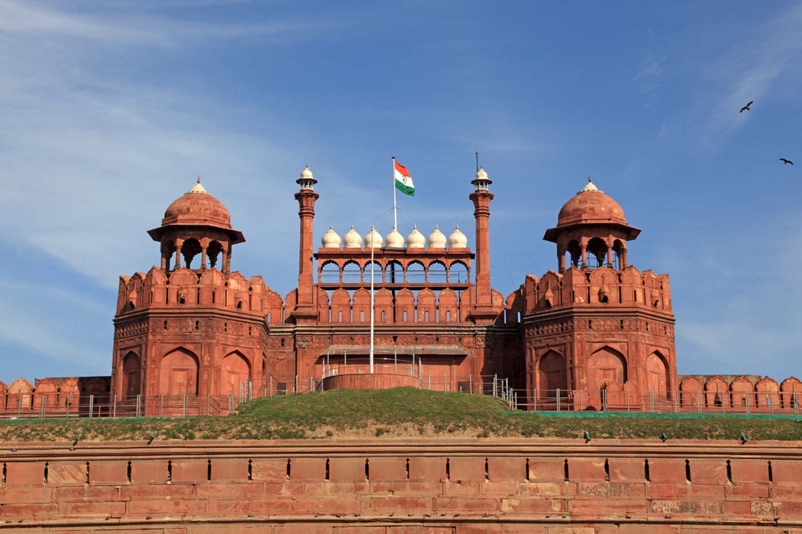
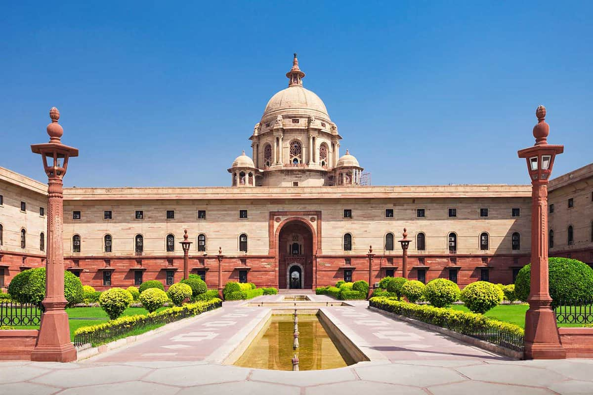
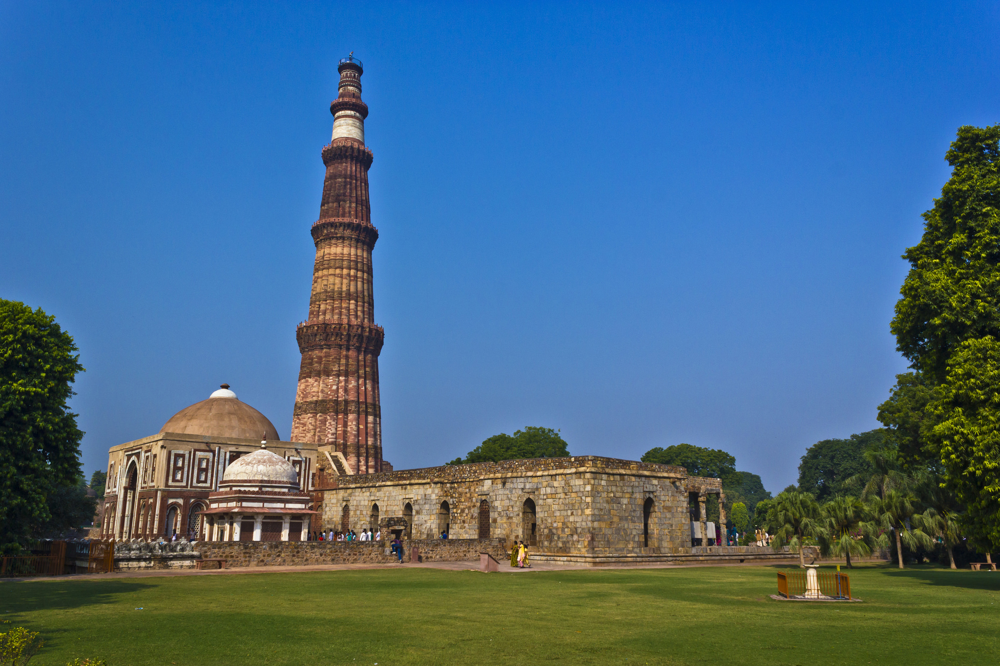

The Red Fort, located in Delhi, is a historic fortress built by Mughal Emperor Shah Jahan in 1648. Constructed from red sandstone, this UNESCO World Heritage site served as the main residence of Mughal emperors for over 200 years. The fort's impressive architecture and significant history make it a symbol of India's rich heritage.
Rashtrapati Bhavan, the official residence of the President of India, is an architectural marvel situated in New Delhi. Designed by Sir Edwin Lutyens, this grand structure was completed in 1929. Spanning 320 acres, it features Mughal and European architectural styles, magnificent gardens, and the iconic Mughal Gardens, making it a symbol of India's democratic spirit.
Qutub Minar, located in Delhi, is a towering minaret standing at 73 meters, making it the tallest brick minaret in the world. Built in 1193 by Qutb-ud-din Aibak, the founder of the Delhi Sultanate, it is part of the Qutub Complex, a UNESCO World Heritage site. The minar's intricate carvings and historical significance draw visitors from around the globe.
